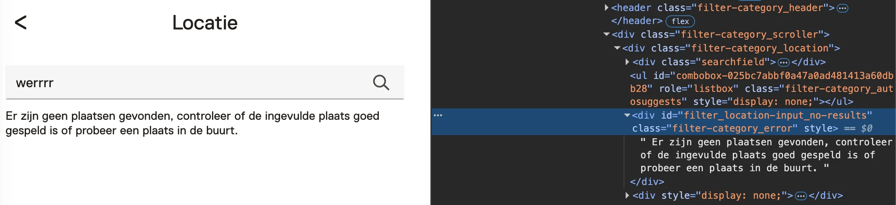

Re-test digitale toegankelijkheid van website museum.nl
Samenvatting
Wij hebben de bevindignen van de eerste audit van de website museum.nl gecontroleerd tussen 1 en 5 december 2025. Op dit moment zijn 39 van de 55 succescriteria als voldoende beoordeeld. In dit rapport lees je wat er bij de overige 16 nog fout gaat, en hoe je dat kunt verbeteren.
Het formulier op deze pagina heeft label-elementen met de teksten “E-mailadres” en “Kaartnummer”. Deze labels zijn niet expliciet gekoppeld aan de bijbehorende invoervelden. De labels hebben geen for-attribuut en de bijbehorende invoervelden hebben geenid-attribuut. label-elementen moeten altijd correct gekoppeld zijn aan de bijbehorende invoervelden. Hierdoor krijgt het invoerveld een toegankelijke naam en heeft het label een groter klikgebied. Dit maakt het formulier beter bruikbaar en toegankelijker. Bovendien zorgt deze koppeling ervoor dat schermlezers het label voorlezen wanneer een bezoeker direct naar het invoerveld navigeert.
Het gaat om de labels “E-mailadres” en “Kaarthouder”.
Oplossing:
Koppel de label-elementen aan hun bijbehorende invoervelden door het for-attribuut op het label-element te gebruiken. In dit attribuut zet je het id van het invoerveld waar het label bij hoort.
#1 - SC 2.5.3 Zichtbare tekst van het label staat niet in de toegankelijke naam
Impact: GrootType: TechniekWCAG: 2.5.3EN: 9.2.5.3
Het formulier op deze pagina heeft invoervelden met zichtbare labels zoals “E-mailadres” en “Kaartnummer”. De toegankelijke naam van deze velden is “typ hier”. Als de zichtbare tekst niet voorkomt in de toegankelijke naam, kan het veld niet met spraak worden bediend. Bezoekers die spraaksoftware gebruiken, geven commando’s door de zichtbare tekst uit te spreken. Als deze tekst niet overeenkomt met de toegankelijke naam, herkent de spraaksoftware het veld niet en kan het niet worden geactiveerd. Dit maakt het formulier minder toegankelijk voor gebruikers die afhankelijk zijn van spraakbediening.
Oplossing:
Dit probleem kan worden opgelost door het juiste id te koppelen aan het label-element.
#2 - Sterretje bij een verplicht veld is niet uitgelegd
Impact: KleinType: TechniekWCAG: 3.3.2EN: 9.3.3.2
Op deze pagina staat een formulier. Sommige velden zijn verplicht en hebben een sterretje in het label. Er wordt echter nergens uitgelegd wat dit symbool betekent. Voor bezoekers met een cognitieve beperking kan een toelichting op het sterretje helpen om te begrijpen dat het om een verplicht veld gaat. Zonder uitleg is het niet voor iedereen duidelijk wat het symbool betekent, wat kan leiden tot verwarring of fouten bij het invullen van het formulier.
Oplossing:
Voeg tekst toe die uitlegt wat dit symbool betekent.
#3 - Voor de validatie is alleen HTML5-validatie gebruikt
Het formulier op deze pagina gebruikt uitsluitend HTML5-validatie voor alle invoervelden. De foutmeldingen die hierbij verschijnen, verdwijnen te snel, doordat er een tijdslimiet is ingesteld. Hierdoor hebben bezoekers mogelijk niet genoeg tijd om de melding te lezen en te begrijpen wat er misgaat. Dit maakt het formulier minder toegankelijk, bijvoorbeeld voor mensen met een cognitieve of motorische beperking.
Oplossing:
Voeg altijd zelf foutmeldingen toe aan het formulier. Controleer of er nog meer formulieren zijn die dit probleem hebben.
#4 - SC 1.3.5 Invoervelden voor persoonlijke gegevens hebben geen autocomplete-attribuut
Impact: GrootType: TechniekWCAG: 1.3.5EN: 9.1.3.5
Het formulier op deze pagina heeft invoervelden voor persoonlijke informatie, zoals achternaam, e-mailadres en telefoonnummer. Deze velden missen het autocomplete-attribuut. Invoervelden voor persoonlijke gegevens moeten het autocomplete-attribuut hebben met een geldige waarde. Hierdoor kunnen browsers en hulpsoftware bezoekers helpen bij het invullen van het formulier, bijvoorbeeld door bekende gegevens automatisch aan te vullen. Dit maakt het formulier gebruiksvriendelijker en toegankelijker.
Oplossing:
Gebruik het autocomplete-attribuut voor alle velden waar persoonlijke informatie in moet worden gevuld. Op deze pagina vind je meer informatie over autocomplete en welke waardes je verplicht moet gebruiken: https://www.w3.org/Translations/WCAG22-nl/#input-purposes
Op deze pagina staat witte tekst (#FFFFFF) die te weinig contrast heeft. Bijvoorbeeld de tekst in het hoofdmenu, de tekst “Vandaag gesloten”, “Favoriet” en “Delen”. Deze witte teksten staan op een magenta achtergrond (#F30CA6) en dat levert een te lage contrastverhouding op van 3,9:1. De Contrast knop verbetert het contrast niet.
Oplossing:
Deze tekst is kleiner dan 24px en niet vetgedrukt, daarom moet het contrast minimaal 4,5:1 zijn.
Op deze pagina wordt de witte kleur gebruikt in teksten in de zijkolom met de roze (#EB595B) achtergrond.
Resultaat retest:
Deze kleurencombinatie verandert niet als de Contrastknop is ingeschakeld.
Oplossing:
Teksten die zijn kleiner dan 24px en niet vetgedrukt, moeten het contrast van minimaal 4,5:1 hebben. Teksten die groter zijn dan 24 pixels of groter dan 19 pixels en vetgedrukt moeten het contrast van 4,5:1 hebben.
In dit pdf-document staat geen titel in de bestandsinstellingen. Zelfs als er een titel op de eerste pagina van het document staat, moet er ook een documenttitel worden ingesteld in de pdf-metadata. Als een pdf wordt geopend in een pdf-lezer (zoals Adobe Acrobat of een browser), wordt zonder ingestelde titel standaard de bestandsnaam getoond, bijvoorbeeld document123.pdf. Door een duidelijke en betekenisvolle titel in te stellen in de documenteigenschappen, wordt deze titel weergegeven in plaats van de bestandsnaam. Dit maakt het document toegankelijker voor bezoekers met verschillende beperkingen. Zij kunnen dan sneller en gemakkelijker bepalen of het document relevant is.
Los het op in Adobe Acrobat:
Open het pdf-document in Adobe Acrobat.
Ga naar Bestand > Eigenschappen.
Ga naar het tabblad Beschrijving.
Vul in het veld Titel een beschrijvende titel in, bijvoorbeeld:
"Rapport: Bevolkingscijfers 2023".
Klik op OK en sla het bestand op.
#10 - Informatieve afbeelding is als achtergrondafbeelding geplaatst
Impact: GrootType: ContentWCAG: 1.1.1EN: 9.1.1.1
In dit pdf-document zijn op alle pagina’s logo’s toegevoegd als artefact. Schermlezers negeren afbeeldingen die als artefact zijn gemarkeerd. Daardoor zijn ze niet toegankelijk voor bezoekers die de tekst laten voorlezen. Als het logo informatief is, moet het niet als artefact worden gemarkeerd. In plaats daarvan moet het via eenFigure-tag worden toegevoegd en voorzien worden van een duidelijke en betekenisvolle alt-tekst. Zo kunnen bezoekers die hulpsoftware gebruiken begrijpen wat de afbeelding voorstelt.
Oplossing:
Voeg het logo toe met de Figure-tag en geef het een beschrijvende alt-tekst.
#11 - In een tabel voor lay-out zijn th-tags gebruikt
Impact: MediumType: ContentWCAG: 1.3.1EN: 9.1.3.1
Op pagina 24–26 van deze pdf is een datatabel gebruikt om tekst in kolommen weer te geven (een visueel effect). Dat mag niet. Er zijn tags gebruikt die alleen bedoeld zijn voor een datatabel, zoals th-tags. Deze tags mogen niet voorkomen in een tabel voor lay-out. Voor blinde bezoekers die een schermlezer gebruiken, kunnen deze tags verwarrend zijn, omdat ze suggereren dat er een relatie is tussen de informatie in de verschillende cellen. In werkelijkheid is die relatie er niet, waardoor de inhoud verkeerd geïnterpreteerd kan worden.
Oplossing:
Verwijder de th-tags.
#12 - Een deel van het document is niet voorzien van codes
Impact: MediumType: ContentWCAG: 1.3.1EN: 9.1.3.1
In dit pdf-document is maar een deel van de inhoud getagd. Alle content van pagina 10 tot en met 23 is niet getagd. Door het ontbreken van tags in dit deel van het document is het niet mogelijk om te onderzoeken of aan de succescriteria is voldaan die te maken hebben met de pdf-codelaag, zoals semantische koppenstructuur en alternatieve teksten bij afbeeldingen. Als dit probleem wordt opgelost, kunnen er nieuwe toegankelijkheidsproblemen aan het licht komen die nu nog niet zichtbaar zijn. Denk daarbij aan ontbrekende tekstlabels bij formuliervelden of ontbrekende relaties tussen formuliervelden en kolomkoppen. Daarom is het belangrijk dat alle pagina’s volledig en correct getagd zijn.
Oplossing:
Voorzie dit gedeelte van codes die de structuur van het document weergeven.
#13 - Koppen zijn niet als kop gemarkeerd
Impact: MediumType: ContentWCAG: 1.3.1EN: 9.1.3.1
In dit pdf-document zijn meerdere koppen visueel opgemaakt als kop, maar niet gemarkeerd met een juiste kop-tag. Voorbeelden hiervan zijn de teksten “Financieel verslag 2022”, “Inhoudsopgave” en “Verslag van het bestuur”. Op deze manier komt de visuele structuur van de inhoud niet overeen met de structuur in de tag-laag van het document. Dit is problematisch voor schermlezers, die afhankelijk zijn van de correcte kopstructuur om snel door het document te kunnen navigeren en de hiërarchie van de informatie te begrijpen. Koppen moeten daarom altijd gemarkeerd worden met semantisch juiste kop-tags, zoals H1, H2 enzovoort.
Oplossing:
Vervang de P-tag door de H-tag, zodat de tag-structuur gelijk is aan de visuele structuur.
#14 - Informatieve afbeeldingen hebben automatisch gegenereerde beschrijvingen
Impact: MediumType: ContentWCAG: 1.1.1EN: 9.1.1.1
Op pagina 24–26 van dit pdf-document staan informatieve afbeeldingen die zijn toegevoegd via een Figure-tag. Deze afbeeldingen hebben automatisch gegenereerde beschrijvingen. De afbeelding op pagina 24 is bijvoorbeeld: “Afbeelding met persoon, poseren, glimlachen Automatisch gegenereerde beschrijving”. Dit is geen goede beschrijving van de afbeelding. Hierdoor missen bezoekers die het document laten voorlezen mogelijk belangrijke inhoud. Informatieve afbeeldingen moeten altijd voorzien zijn van een handmatig geschreven alt-tekst die relevant is voor de context van het document.
Oplossing:
Voeg beschrijvende alt-teksten toe aan deze informatieve afbeeldingen.
#15 - Informatieve afbeeldingen hebben geen alt-tekst
Impact: MediumType: ContentWCAG: 1.1.1EN: 9.1.1.1
In dit pdf-document staan meerdere informatieve afbeeldingen die geen tekstalternatief hebben (alt-tekst). Dit komt voor op pagina’s 24, 25 en 26. Een voorbeeld is de afbeelding op pagina 24 bij “Erik van Ginkel”. Afbeeldingen die met een Figure-tag zijn gemarkeerd, moeten altijd een beschrijving hebben in de vorm van een alt-tekst. De Figure-tag is namelijk bedoeld voor informatieve afbeeldingen. Schermlezers lezen deze alt-tekst voor, zodat blinde bezoekers ook de visuele informatie kunnen begrijpen. Omdat de alt-tekst in dit geval ontbreekt, leest de schermlezer alleen “afbeelding” voor.
Oplossing:
Voeg alt-teksten toe aan deze informatieve afbeeldingen.
Op deze pagina ontbreekt het lang-attribuut op het html-element. Als dit attribuut niet aanwezig is, kan voorleessoftware de pagina niet in de correcte taal voorlezen. De software weet dan niet wat de primaire taal van de pagina is.
Oplossing:
Zorg dat het lang-attribuut aanwezig is op het html-element, en dat dit attribuut de taalcode bevat van de taal van de pagina, bijvoorbeeld lang=”nl” voor Nederlands.
In het formulier op deze pagina staan invoervelden die een specifiek invoerformaat vereisen. Bijvoorbeeld de invoervelden “Voorletters”. Het gaat om formats zoals “Maximaal 10 karakters” of “Maximaal 60 karakters”. De instructies over de vereiste formats zijn echter niet permanent zichtbaar op de pagina. Hierdoor moet een bezoeker verschillende schrijfwijzen uitproberen om te ontdekken hoe de velden ingevuld moeten worden. Dit is ontoegankelijk voor veel bezoekers, vooral voor mensen met een cognitieve beperking of beperkte digitale vaardigheden.
Oplossing:
Zorg dat instructies over de vereiste schrijfwijze altijd zichtbaar zijn buiten het invoerveld, bijvoorbeeld als onderdeel van het label of als begeleidende tekst naast het veld.
In het formulier op deze pagina worden de foutmeldingen weergegeven met een rode tekst (#d94d4d) op een witte achtergrond. De contrastverhouding is 4,1:1 en daarmee te laag. Foutmeldingen moeten, net als andere teksten, voldoen aan de minimale contrasteisen. Voor normale tekst is een minimale contrastverhouding van 4,5:1 vereist, zodat de tekst goed leesbaar is voor bezoekers met een visuele beperking.
Oplossing:
Zorg dat het contrast tussen de kleur van de foutmelding en de achtergrond minimaal 4,5:1 is.
#19 - Het is niet in code vastgelegd of secties van de accordeon open of dicht zijn
Op deze pagina staan secties zoals “Totaal €153,00 3 Binnen 5 tot 8 dagen thuis bezorgd”, met verborgen content die zichtbaar wordt wanneer er kaarten zijn toegevoegd. De open of gesloten toestand van deze secties is visueel duidelijk, maar niet in de code vastgelegd. Voor bezoekers die de pagina kunnen zien, is het eenvoudig te herkennen of een sectie is in- of uitgeklapt. Voor blinde of slechtziende bezoekers die een schermlezer gebruiken, is dat niet het geval. Zonder de juiste code, zoals een correct ingesteld aria-expanded-attribuut, kunnen zij deze informatie niet waarnemen.
Dit probleem komt ook voor onder de kop “Hulp nodig?” bij de bijbehorende secties.
Oplossing:
Je lost dit op door een aria-expanded-attribuut toe te voegen aan de knoppen waarmee je de secties opent en sluit, of door visueel verborgen tekst toe te voegen die de staat van de sectie aangeeft.
Bij een aantal teksten is het contrast van de tekstkleur tegen de achtergrond te laag. Daardoor kan de tekst slecht leesbaar zijn voor bezoekers met een visuele beperking.
Op pagina https://www.museum.nl/nl/themas staat de witte tekst “Ga als feminist” tegen een lichte achtergrond. De contrastverhouding is op sommige plekken 1,5:1. Zie ook “Ga voor de kunst …”. Dit probleem verdwijnt niet als de contrast knop is ingeschakeld.
Oplossing:
Tekst die kleiner is dan 18pt moet een kleurcontrast hebben van minimaal 4,5:1 met de achtergrond. Vanaf 18pt (24px) of 14pt (18,66px) vetgedrukt is dit minimaal 3,0:1. Met een vetgedrukte tekst bedoelen we een tekst die de CSS-eigenschap font-weight: bold of font-weight: 700 heeft.
Op https://www.museum.nl/nl/museumkaart staat een video die automatisch afspeelt en niet gepauzeerd of gestopt kan worden. Dit kan storend zijn voor mensen met een cognitieve beperking. De bewegende inhoud zorgt voortdurend voor afleiding terwijl zij proberen de tekst op de pagina te lezen.
Oplossing:
Er moet een manier zijn waarmee bezoekers dit soort multimedia kunnen stoppen, pauzeren of verbergen. Dit geldt voor alle bewegende, knipperende, scrollende of automatisch actualiserende content die tegelijk met andere informatie wordt getoond, automatisch start en langer dan 5 seconden speelt.
Er is een pauzeknop toegevoegd aan deze video, maar deze knop is niet met de muis te bedienen.
#22 - SC 1.3.1 Decoratieve video is niet verborgen voor schermlezers
Op deze pagina staat onder de kop “Ga kijken, ga doen..” een decoratieve video. De video heeft geen geluid en bevat geen essentiële informatie, maar is momenteel niet verborgen voor schermlezers. Dit kan verwarrend zijn voor blinde bezoekers. Decoratieve video’s moeten daarom verborgen worden voor schermlezers.
Oplossing:
Voeg het attribuut aria-hidden="true" toe aan het video-element of de container ervan. Hierdoor wordt het element genegeerd door schermlezers.
#23 - SC 2.2.2 Video speelt automatisch af
Op deze pagina staat onder de kop “Ga kijken, ga doen..” een video die automatisch afspeelt en niet gepauzeerd of gestopt kan worden. Dit kan storend zijn voor mensen met een cognitieve beperking. De bewegende inhoud zorgt voortdurend voor afleiding terwijl zij proberen de tekst op de pagina te lezen.
Ditzelfde probleem komt ook voor op pagina https://www.museum.nl/nl/museumkaart.
Oplossing:
Er moet een manier zijn waarmee bezoekers dit soort multimedia kunnen stoppen, pauzeren of verbergen. Dit geldt voor alle bewegende, knipperende, scrollende of automatisch actualiserende content die tegelijk met andere informatie wordt getoond, automatisch start en langer dan 5 seconden speelt.
Op https://www.museum.nl/nl/museumkaart staat een video die automatisch afspeelt en niet gepauzeerd of gestopt kan worden. Dit kan storend zijn voor mensen met een cognitieve beperking. De bewegende inhoud zorgt voortdurend voor afleiding terwijl zij proberen de tekst op de pagina te lezen.
Oplossing:
Er moet een manier zijn waarmee bezoekers dit soort multimedia kunnen stoppen, pauzeren of verbergen. Dit geldt voor alle bewegende, knipperende, scrollende of automatisch actualiserende content die tegelijk met andere informatie wordt getoond, automatisch start en langer dan 5 seconden speelt.
Resultaat retest:
Deze bevinding is deels opgelost. De pauzeknop is toegevoegd, maar deze knop werkt niet met de muis, alleen met het toetsenbord.
#25 - Melding over aangepaste zoekresultaten wordt niet automatisch voorgelezen door schermlezers
Impact: GrootType: TechniekWCAG: 4.1.3EN: 9.4.1.3
Met de filters op deze pagina kun je de zoekresultaten aanpassen. Er verschijnt dan een wachtanimatie en een melding zoals “2324 resultaten”, zonder dat de pagina opnieuw wordt geladen. Deze melding is een statusbericht, maar wordt niet aangekondigd door schermlezers omdat deze geen toetsenbordfocus krijgt. Dat is wel de bedoeling, want het gaat om belangrijke informatie voor bezoekers die hulpsoftware gebruiken.

Met de knop “Filters” op deze pagina open je een dialoogvenster. In de sectie “Locatie” verschijnt een statusmelding als toegang tot de locatie wordt geweigerd: “We hebben geen toegang tot je locatie. Mogelijk is het delen van locaties uitgeschakeld. Controleer de instellingen voor het delen van je locatie.” Deze melding wordt niet automatisch voorgelezen door schermlezers. De toetsenbordfocus verplaatst zich niet naar de melding, en de melding is ook niet geprogrammeerd als statusupdate. Hierdoor missen blinde bezoekers deze belangrijke informatie.
Oplossing:
Statusberichten moeten automatisch voorgelezen worden door schermlezers, maar de code die dit mogelijk maakt is nog niet toegevoegd. Je lost dit op door aria-live="polite" of role="status" aan de melding toe te voegen.
De knop met een pijltje, die wordt gebruikt om vanuit een van de “Opties” terug te keren naar de filters, heeft geen toegankelijke naam. Hierdoor is de functie van deze knop niet duidelijk voor bezoekers die een schermlezer gebruiken.
Oplossing:
Er zijn meerdere oplossingen om deze knop een naam te geven, bijvoorbeeld via een aria-label.
#27 - Tekst van het logo staat niet in toegankelijke naam
Impact: GrootType: TechniekWCAG: 2.5.3EN: 9.2.5.3
Het logo op deze pagina heeft de zichtbare tekst “museum/nl\”, en is ook een link. De toegankelijke naam van deze link is “Terug naar de homepage”. Zoals je ziet, komt de toegankelijke naam niet overeen met de zichtbare tekst in het logo. Daardoor werkt de link niet goed als deze met stemcommando’s wordt geactiveerd. Bezoekers noemen dan de tekst die zij in het logo zien, maar omdat die tekst niet overeenkomt met de toegankelijke naam, herkent het systeem de link niet.
Oplossing:
Zorg dat de tekst die in het logo zichtbaar is voorkomt in de toegankelijke naam, het liefst vooraan. Het is nog beter als de toegankelijke naam gelijk is aan de zichtbare tekst.
#28 - Invoervelden voor persoonlijke gegevens hebben geen autocomplete-attribuut
Impact: GrootType: TechniekWCAG: 1.3.5EN: 9.1.3.5
Het formulier op deze pagina heeft invoervelden voor persoonlijke informatie, zoals het e-mailadres. Deze velden hebben geen autocomplete-attribuut. Invoervelden voor persoonlijke informatie zoals achternaam, e-mailadres of telefoonnummer moeten het autocomplete-attribuut hebben. Hierdoor kunnen browsers en hulpsoftware helpen bij het invullen van deze velden, bijvoorbeeld door eerder gebruikte gegevens automatisch aan te vullen.
Oplossing:
Gebruik het autocomplete-attribuut voor alle velden waar persoonlijke informatie in moet worden gevuld. Op deze pagina vind je meer informatie over autocomplete en welke waardes je verplicht moet gebruiken: https://www.w3.org/Translations/WCAG22-nl/#input-purposes.
#29 - Instructie bij invoerveld is niet altijd zichtbaar
Impact: GrootType: TechniekWCAG: 3.3.2EN: 9.3.3.2
De velden “Kaartnummer” en “Voornaam” in het formulier op deze pagina hebben instructies zoals “Moet 9 of 10 cijfers zijn” en “Mag geen speciale tekens of cijfers bevatten”. Deze instructies zijn niet permanent zichtbaar op de pagina, maar verschijnen alleen als onderdeel van de foutmelding. Instructies over het juiste invoerformaat moeten altijd vooraf zichtbaar zijn, zodat bezoekers weten wat er van hen verwacht wordt voordat zij het formulier invullen. Als deze informatie pas zichtbaar wordt na een fout, moeten bezoekers het formulier mogelijk meerdere keren proberen, wat verwarrend en ontoegankelijk kan zijn.
Oplossing:
Zorg dat instructies vooraf al zichtbaar en toegankelijk zijn voor alle bezoekers, niet alleen in foutmeldingen. Verplaats de instructie zodat deze permanent zichtbaar is in de buurt van het invoerveld.
#30 - De rand van het invoerveld heeft niet genoeg contrast
Het formulier op deze pagina heeft invoervelden met een grijze rand (#C1C2C4) op een witte achtergrond. De contrastverhouding tussen de rand van de invoervelden en de achtergrond is 1,8:1.
Oplossing:
De randen van interactieve elementen zoals invoervelden moeten minimaal een contrast van 3,0:1 hebben met de achtergrond.
#31 - Iframe heeft geen toegankelijke naam
Impact: MediumType: ContentWCAG: 4.1.2EN: 9.4.1.2
Op deze pagina staat een iframe zonder title-attribuut. Iframes moeten een duidelijke en betekenisvolle beschrijving hebben, die meestal wordt toegevoegd via het title-attribuut. In deze beschrijving moet staan om wat voor type inhoud het gaat (bijvoorbeeld een video of podcast) en waar het inhoudelijk over gaat. Deze informatie is essentieel voor bezoekers die hulpsoftware gebruiken. Op basis van de titel kunnen zij beslissen of het de moeite waard is om de inhoud van het iframe te verkennen. Zonder deze beschrijving is het iframe niet toegankelijk voor blinde of slechtziende gebruikers.
Oplossing:
Voeg het title-attribuut aan het iframe-element toe, en zet daar een tekst in waaruit blijkt welk type inhoud het iframe bevat, en waar het inhoudelijk over gaat.
Het logo “mu/k”, dat is geplaatst met een img-element, heeft geen alt-attribuut. Hierdoor lezen schermlezers nu de bestandsnaam van de afbeelding voor, en dat is niet de bedoeling. Informatieve afbeeldingen zoals een logo moeten altijd een alt-tekst hebben. In die alt-tekst moet de volledige tekst staan die in het logo te zien is. Op die manier weten bezoekers die het logo niet kunnen zien ook wat er op het logo staat.
Oplossing:
Voeg een alt-tekst toe die de volledige tekst van het logo bevat.
strong-element in plaats van kop-element
Impact: MediumType: ContentWCAG: 1.3.1EN: 9.1.3.1
Op deze pagina is de tekst “Heb je een vraag?” gemarkeerd met een strong-element in plaats van met een kop-element. Het strong-element is niet bedoeld om koppen mee te markeren. Daarvoor moet altijd een kop-element zoals h2 worden gebruikt. Koppen worden gebruikt om structuur aan te brengen in de inhoud van een pagina. Alleen als ze gemarkeerd zijn met een kop-element, kunnen schermlezers en andere hulpsoftware de betekenis van de tekst correct interpreteren. Het strong-element is bedoeld om nadruk te geven aan een woord of zinsdeel, niet om de hiërarchie van de inhoud aan te geven.
Oplossing:
Verwijder het strong-element en gebruik de juiste kop-elementen om deze koppen te markeren, zoals h2 of h3.
#33 - Relatie tussen links in een groep is niet in HTML vastgelegd
Impact: KleinType: TechniekWCAG: 1.3.1EN: 9.1.3.1
In de footer van deze pagina staat een groep links die visueel duidelijk bij elkaar hoort. Deze relatie is niet in de code vastgelegd. Als het voor een ziende bezoeker duidelijk is dat een groep links bij elkaar hoort, dan moet die structuur ook in de HTML-code aanwezig zijn. Dit gebeurt ook op een klein scherm in het mobiele navigatiemenu, waar links ook als een visuele groep worden weergegeven zonder dat deze relatie in de code is vastgelegd.
Oplossing:
Neem de elementen op in een ul- of nav-element.
#34 - Blinde bezoekers krijgen geen bericht van de foutmelding
Impact: GrootType: TechniekWCAG: 4.1.3EN: 9.4.1.3
Op deze pagina staat een formulier. Als er fouten worden gemaakt, verschijnt de foutmelding “Captcha-validatie mislukt. Neem contact op met beheerder.” Deze melding krijgt geen toetsenbordfocus op het moment dat die zichtbaar wordt. Hierdoor wordt de foutmelding niet automatisch voorgelezen door een schermlezer. Om dit toegankelijk te maken, moet de melding focus krijgen of als statusbericht worden gemarkeerd. Alleen dan kunnen schermlezers de foutmelding automatisch voorlezen zodra deze verschijnt.
Oplossing:
Voeg aria-live="polite" aan de melding toe. Dan wordt de melding automatisch voorgelezen zodra deze verschijnt.
#35 - Menuknop heeft niet de juiste rol en naam
Impact: GrootType: TechniekWCAG: 4.1.2EN: 9.4.1.2
De menuknop bovenaan de pagina die verschijnt op een klein scherm, heeft niet de juiste toegankelijke rol en naam. Hierdoor kan hulpsoftware de knop niet herkennen als een interactief element. De juiste rol voor deze menuknop is button, omdat de knop een actie uitvoert: het openen of sluiten van het menu. Als deze rol ontbreekt of onjuist is, kunnen schermlezers of andere hulpmiddelen de knop niet correct identificeren. Dit maakt het menu moeilijker toegankelijk voor mensen die afhankelijk zijn van hulpsoftware. Ook moet de knop een duidelijke toegankelijke naam hebben, zodat het doel van de knop duidelijk is.
Oplossing:
Zorg dat de menuknop de juiste rol krijgt, door het button-element ervoor te gebruiken, of role="button" toe te voegen.
#36 - Menuknop geeft geen informatie over status
Impact: GrootType: TechniekWCAG: 4.1.2EN: 9.4.1.2
Op een klein scherm verschijnt een menuknop om het mobiele navigatiemenu te openen. Deze knop geeft geen informatie over de toestand van het menu (open of gesloten) aan bezoekers die het menu niet kunnen zien en een schermlezer gebruiken.
Oplossing:
Voeg bijvoorbeeld een tekstuele uitleg toe (ingeklapt/uitgeklapt) die je voor ziende bezoekers met CSS verbergt. Of gebruik het aria-expanded-attribuut op de link van het mobiele menu. Dit attribuut moet de waarde "true" krijgen als het menu getoond wordt, en “false" als het menu verborgen is.
Onder de kop “Zo maak je jouw Museumkaart digitaal” staat een video die instructies laat zien in de vorm van tekst in beeld. Voor deze tekst is geen alternatief. Bezoekers die blind of slechtziend zijn, missen hierdoor belangrijke informatie.
Oplossing:
Dit kan voor dit succescriterium (1.2.3) worden opgelost met een geschreven tekst (media-alternatief), maar om aan succescriterium 1.2.5 te voldoen, moet een audiobeschrijving worden toegevoegd die de visuele elementen in de video beschrijft, zoals namen, functies, logo’s en teksten.
Als je op filterknoppen zoals “Alles – 2324” klikt, verschijnt een laad-animatie. Deze animatie geeft aan dat de pagina bezig is met het laden van resultaten en is bedoeld als statusbericht. De animatie is echter niet toegankelijk voor blinde bezoekers, omdat deze niet de juiste rol heeft in de HTML-structuur. Daardoor wordt de informatie die de animatie overbrengt (‘aan het laden’) niet voorgelezen door schermlezers. Ditzelfde geldt voor de laad-animatie die verschijnt als op de knop “Laad meer” wordt geklikt, en op pagina https://www.museum.nl/nl/zien-en-doen/ voor de opties in de knop “Filters” die een laad-animatie activeren.
Oplossing:
Aan het div-element waar deze melding is opgenomen is een role=”status” en een aria-label toegevoegd. En toch wordt dit bericht niet als een statusbericht voorgelezen. Het div-element met dit bericht verschijnt niet op tijd in de HTML.
Dit zou je kunnen oplossen met een setTimeout functie. Een andere oplossing is het verplaatsen van toetsenbordfocus naar deze melding.
<script>
$('#id').click(function(){
var live = $('#liveRegion span.sr-only');
live.text('geen locatie gevonden');
setTimeout(function(){
live.text('');
}, 3000);
});
</script>
Over dit onderzoek
Leeswijzer
Onze rapporten zijn anders. Bij het bespreken van de gevonden problemen volgen wij niet de structuur van de norm, maar die van jouw website of app. Hierdoor kun je gewoon per pagina of scherm aan de slag gaan. Wel zo makkelijk! Je vindt verderop een overzicht van alle pagina’s met problemen.
We geven je bij elk gevonden issue een paar voorbeelden, maar niet een complete lijst. Controleer zelf of het probleem ook nog op andere plekken voorkomt. Zie het rapport als een leidraad.
Gebruikte norm
Dit onderzoek laat zien in hoeverre de website op dit moment voldoet aan WCAG 2.2, niveau A en AA. WCAG staat voor Web Content Accessibility Guidelines. Dit is de internationale norm voor digitale toegankelijkheid. De Europese norm EN 301 549 bevat alle eisen van WCAG op niveau A en AA.
In dit rapport hebben we korte beschrijvingen van de succescriteria uit de norm opgenomen, met een algemene uitleg erbij. Wil je ze helemaal lezen? Bekijk dan de documentatie van WCAG.
Gebruikte onderzoeksmethode
We gebruiken de onderzoeksmethode WCAG-EM van het W3C. Het proces ziet er als volgt uit:
vaststellen wat binnen en buiten scope valt
vaststellen welke technologieën zijn gebruikt
steekproef (sample) samenstellen
steekproef onderzoeken
gevonden issues beschrijven
Het grootste deel van het onderzoek doen we met de hand. Voor een deel van de toegankelijkheidseisen gebruiken we automatische tools als ondersteuning, zoals axe-core en Chrome Developer Tools.
Belangrijk om te weten
Dit rapport helpt je om de toegankelijkheid van je website te verbeteren. Maar let op: het is geen definitieve, volledige lijst van alle aanwezige toegankelijkheidsproblemen. Dat zit zo:
Het is een steekproef
Ten eerste is het onderzoek gebaseerd op een steekproef. Die is op een betrouwbare manier genomen, en de meeste problemen zullen daardoor zeker aan het licht komen. Toch kan een probleem net buiten de steekproef vallen. Bij een volgend onderzoek kan het wel ontdekt worden.
Op basis van falsificatie
We beoordelen vanuit het principe van falsificatie. Dat houdt in dat we proberen te bewijzen dat iets niet waar is, in plaats van te bevestigen dat het klopt. ‘Voldoet’ betekent daarom dat we geen reden hebben gevonden om een punt af te keuren. Maar als we later wél een reden vinden, kan het alsnog worden afgekeurd.
Voortschrijdend inzicht
Het komt voor dat de beoordeling van een succescriterium op detailniveau verandert. De norm beschrijft namelijk niet élk mogelijk scenario. Samen met andere onderzoeksbureaus overleggen we hoe we met bepaalde situaties omgaan. Zo kan iets dat nu wordt afgekeurd, soms bij een volgend onderzoek worden goedgekeurd en andersom.
Oplossen leidt tot nieuw probleem
Ten slotte kan het gebeuren dat bij het oplossen van een probleem onbedoeld een nieuw toegankelijkheidsprobleem ontstaat. Dat komt dan bij een volgend onderzoek pas naar voren.
Hoe werkt dit rapport?
Bevindingen bekijken en filteren
Alle gevonden toegankelijkheidsproblemen staan onder Gevonden problemen. Je kunt de bevindingen filteren op:
Impact (Groot, Medium, Klein, Advies) — hoe ernstig is het probleem voor de gebruiker?
Type (Content, Techniek) — moet de inhoud of de techniek worden aangepast?
Status (Open, Opgelost) — welke problemen zijn al verholpen?
Voortgang bijhouden
Je kunt je voortgang op twee manieren bijhouden:
CSV-export — exporteer alle bevindingen als CSV-bestand en laad het in een (online) spreadsheet om met je team samen te werken.
Jira-export — exporteer alle bevindingen als Jira-compatibel CSV-bestand. Importeer het via Jira > Issues > Import issues from CSV. Bevindingen worden aangemaakt als bugs met prioriteit op basis van impact.
Registreer in de browser — activeer deze optie om per bevinding bij te houden of het is opgelost. Je voortgang wordt opgeslagen in je browser. Niemand anders kan je resultaat zien. Let op: de voortgang is gekoppeld aan je browser. Als je een andere browser of een ander apparaat gebruikt, begint de telling opnieuw.
Plan van aanpak — download een geprioriteerd plan van aanpak om de gevonden problemen stap voor stap op te lossen. Dit is beschikbaar bij audits vanaf maart 2026.
Link naar een specifieke bevinding delen
Bij elke bevinding verschijnt een link-icoon wanneer je er met de muis overheen gaat. Klik op dit icoon om de directe link naar die bevinding te kopiëren. Je kunt deze link plakken in een e-mail of chatbericht, bijvoorbeeld om een vraag te stellen aan Proper Access over een specifiek punt.